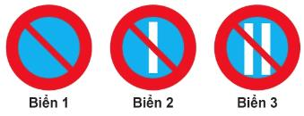
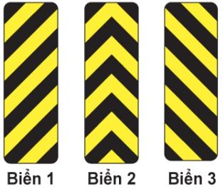
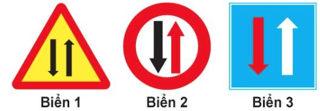

Cạm bẫy đề thi & Câu hỏi dễ nhầm lẫn
Tổng hợp 11 nhóm câu hỏi có bẫy chữ, bẫy trắc nghiệm và khái niệm đối ngẫu dễ lẫn lộn nhất trong 600 câu GPLX. Đã lược bỏ các bảng tra cứu số liệu chuẩn (được quản lý riêng tại Cẩm Nang Quy Chuẩn) để tập trung giải nghĩa cạm bẫy và từ khóa nhận dạng.
Dừng xe và Đỗ xe
Khác nhau ở thời gian và việc được rời xe hay không.
| Dừng xe | Đỗ xe | |
|---|---|---|
| Thời gian | tạm thời, vừa đủ lên/xuống xe, xếp dỡ, kiểm tra kỹ thuật | không giới hạn thời gian |
| Tắt máy / rời vị trí lái | không tắt máy, không rời vị trí lái (trừ đóng mở cửa, xếp dỡ, kiểm tra – phải phanh đỗ) | chỉ rời xe sau khi đã phanh đỗ / biện pháp an toàn |
| Đường dốc | – | đánh lái về phía lề đường, chèn bánh |
- sát lề, bánh xe gần nhất cách lề không quá → 0,25 m (câu 60)
- đường phố hẹp, cách xe ô tô đỗ ngược chiều → tối thiểu 20 m (câu 61)
- Câu 14 (dừng): phương án "không giới hạn thời gian" là SAI. Câu 15 (đỗ): phương án "có giới hạn thời gian" là SAI.
Người tham gia GT / điều khiển phương tiện / lái xe / điều khiển giao thông
Bốn cụm chỉ khác một vài chữ. Hãy tìm đối tượng đứng sau chữ "người".
| Cụm trong đề | Gồm những ai |
|---|---|
| Người tham gia giao thông | người điều khiển + người được chở + người dẫn dắt vật nuôi + người đi bộ (câu 11: "Cả hai ý") |
| Người điều khiển phương tiện tham gia GT | xe cơ giới + xe thô sơ + xe máy chuyên dùng (câu 6, 12) |
| Người lái xe | chỉ người điều khiển xe cơ giới (câu 7) |
| Người điều khiển giao thông | Cảnh sát giao thông + người được giao nhiệm vụ hướng dẫn giao thông (câu 13) |
- Câu 6: phương án 2 "người được giao nhiệm vụ hướng dẫn giao thông" thực ra là định nghĩa của câu 13.
- "Điều khiển PHƯƠNG TIỆN" ≠ "điều khiển GIAO THÔNG": một bên là người lái, một bên là người chỉ huy giao thông.
Xe cơ giới và xe thô sơ
Hai câu đối xứng, phương án sai chuyển xe từ nhóm này sang nhóm kia.
| Nhóm | Có (từ khóa) | Không có |
|---|---|---|
| Xe cơ giới | xe ô tô; rơ moóc, sơ mi rơ moóc kéo bởi ô tô; xe mô tô, xe gắn máy; xe bốn bánh có gắn động cơ | xe đạp |
| Xe thô sơ | xe đạp (kể cả xe đạp máy, xe đạp điện), xích lô, xe lăn người khuyết tật, xe vật nuôi kéo | xe gắn máy, xe máy chuyên dùng |
- Xe đạp điện / xe đạp máy thuộc xe THÔ SƠ. Xe gắn máy thuộc xe CƠ GIỚI.
- Câu 8: phương án 1 lẫn "xe đạp" vào nhóm cơ giới → sai. Câu 9: phương án 2 lẫn "xe gắn máy" vào nhóm thô sơ → sai.
Nồng độ cồn – ma túy – rượu bia
Hai chất khác nhau, hình thức xử phạt chỉ khác một chữ.
| Từ khóa | Kết quả |
|---|---|
| chất ma túy trong cơ thể (câu 23) | phạt tiền VÀ tước GPLX → "Cả hai ý" |
| nồng độ cồn trong máu / hơi thở (câu 25) | phạt tiền VÀ có thể tước GPLX → "Cả hai ý" |
| có bị nghiêm cấm không? (câu 24) | Bị nghiêm cấm – không có mức "nhẹ" nào được phép |
| Luật Phòng chống tác hại rượu bia (câu 26) | người điều khiển ô tô, mô tô, xe đạp, xe gắn máy – không gồm người được chở |
- Chú ý chữ "CÓ THỂ" ở cồn (25) so với ma túy (23).
Nhường đường tại nơi giao nhau
Tìm từ khóa về loại đường hoặc vòng xuyến, rồi chọn hướng cần nhường.
| Từ khóa trong đề | Phải nhường |
|---|---|
| đường không ưu tiên / đường nhánh (câu 91; 253 cùng quy tắc) | xe trên đường ưu tiên / đường chính, từ bất kỳ hướng nào |
| có báo hiệu vòng xuyến (câu 92) | xe đến từ bên TRÁI |
| không có vòng xuyến, cùng cấp (câu 93) | xe đến từ bên PHẢI |
- 92 và 93 chỉ khác "có / không có vòng xuyến" nhưng nhường hai phía ngược nhau.
- 93: phương án "xe báo hiệu xin đường trước thì đi trước" là sai; 92: "không phải nhường" là sai.
Nơi bị cấm: quay đầu – lùi – vượt – dừng/đỗ
Bốn hành vi có danh sách nơi cấm chồng nhau. Tìm từ khóa đặc trưng của từng hành vi.
| Hành vi | Từ khóa nơi bị cấm |
|---|---|
| Quay đầu (54, 55) | phần đường người đi bộ qua đường, cầu / đầu cầu / gầm cầu vượt / ngầm, đường sắt cùng mức, đường hẹp, dốc, đoạn cong khuất tầm nhìn, cao tốc, hầm, đường một chiều (trừ có hiệu lệnh/biển tạm thời) |
| Lùi xe (58, 86) | đường một chiều, khu vực cấm dừng, phần đường người đi bộ, nơi giao nhau, giao đường sắt, nơi tầm nhìn bị che khuất (→ "không được lùi", không phải "bấm còi 3 lần"), hầm, cao tốc |
| Vượt xe (47, 53) | cầu hẹp một làn, đường cong tầm nhìn hạn chế, đỉnh dốc khuất tầm nhìn, nơi giao nhau, giao đường sắt, gặp xe ưu tiên, phần đường người đi bộ, hầm |
| Dừng / đỗ (59, 62) | miệng cống thoát nước, miệng hầm điện thoại, điện cao thế, chỗ xe chữa cháy lấy nước; phạm vi an toàn đường sắt; song song cùng chiều với xe đang dừng/đỗ; đường cong / gần đầu dốc khuất tầm nhìn; bên trái đường một chiều |
- đường MỘT CHIỀU → quay đầu: cấm · lùi: cấm · dừng/đỗ: chỉ cấm bên TRÁI
- tầm nhìn bị che khuất → quay đầu, lùi, dừng/đỗ, vượt đều cấm
- cao tốc → quay đầu, lùi cấm; dừng/đỗ chỉ ở làn khẩn cấp khi sự cố
- 55: phương án 2 có "đường quốc lộ" – không phải nơi cấm quay đầu → sai; phương án đúng là phương án 1.
- 62: phương án "lề đường rộng / khu đất ngoài phần đường xe chạy" là nơi ĐƯỢC dừng đỗ → sai.
- 108 (không được vượt): phương án 2 "xe trước đã tránh về bên phải" không phải trường hợp cấm. 109 (được vượt bên phải): xe trước rẽ trái / xe chuyên dùng đang làm việc; "xe trước sát lề trái" là sai.
Điểm giấy phép lái xe: phục hồi
Phân biệt "chưa bị trừ hết" với "đã bị trừ hết" điểm.
| Tình trạng | Điều kiện phục hồi |
|---|---|
| chưa bị trừ hết 12 điểm (câu 140) | 12 tháng liền không bị trừ điểm từ lần trừ gần nhất → phục hồi đủ 12 điểm |
| đã bị trừ hết điểm (câu 141) | sau ít nhất 6 tháng, kiểm tra kiến thức pháp luật đạt → phục hồi đủ 12 điểm |
- 141: phương án "12 tháng không vi phạm" là điều kiện của câu 140 – sai ở câu này.
Biển: cấm đỗ xe ngày chẵn / ngày lẻ
Cả hai câu dùng cùng một hình ba biển. Đếm số vạch trắng.

| Biển | Ý nghĩa |
|---|---|
| Biển 1 – không có vạch | cấm đỗ xe mọi ngày |
| Biển 2 – 1 vạch | cấm đỗ xe ngày lẻ |
| Biển 3 – 2 vạch | cấm đỗ xe ngày chẵn |
- 327 (ngày chẵn) → "Biển 1 và biển 3". 328 (ngày lẻ) → "Biển 1 và biển 2". Biển 1 luôn đúng vì cấm đỗ mọi ngày.
Biển sọc vằn: tránh chướng ngại vật bên TRÁI / bên PHẢI / cả hai
Ba biển chỉ khác hướng của các sọc chéo. Quy ước trái / phải ở đây là trái / phải của người lái xe đang nhìn thẳng vào biển – cũng chính là trái / phải khi bạn nhìn tấm hình.

| Biển | Hình sọc | Đi về phía nào? | Đáp án câu |
|---|---|---|---|
| Biển 1 | sọc nghiêng “/”: đầu thấp (vạch đỏ trên sơ đồ) của sọc nằm ở bên TRÁI (đi từ dưới-trái lên trên-phải) | bên TRÁI của chướng ngại vật | 470 (đi bên trái) → Biển 1 |
| Biển 2 | sọc hình chữ V ngược “^” (đỉnh hướng lên, hai nhánh cùng thấp xuống hai bên) | cả hai bên (trái hoặc phải) | 472 (cả hai hướng) → Biển 2 |
| Biển 3 | sọc nghiêng “\”: đầu thấp của sọc nằm ở bên PHẢI (đi từ trên-trái xuống dưới-phải) | bên PHẢI của chướng ngại vật | 471 (đi bên phải) → Biển 3 |
- sọc dốc xuống về phía nào → xe lách về phía đó (“/” → trái, “\” → phải)
- chữ V ngược “^” – xuống cả hai bên → được đi cả hai bên
- Đừng đọc theo hướng sọc “đi lên” – hãy nhìn đầu thấp. Biển 1 cao ở bên phải nhưng thấp ở bên TRÁI nên chỉ bên trái.
- Đừng nhầm với 473 / 474: biển chữ V vàng đen khổ vuông (mũi tên “>” hoặc “<”) báo đường cong nguy hiểm (473: đáp án “Biển 1 và biển 3”). Biển sọc vằn hẹp, dài mới là biển tránh chướng ngại vật; riêng 474 hỏi “đi được cả hai hướng” → biển sọc hẹp chữ V ngược (Biển 2).
Biển đường hẹp: hai chiều – nhường đường – được ưu tiên
Cả ba biển đều có hai mũi tên ngược chiều. Đừng cố đọc từng mũi tên đỏ / trắng / đen – hãy nhìn hình dạng và màu nền của cả biển trước.

| Biển | Nhận dạng | Ý nghĩa | Bên nào nhường? | Đáp án câu |
|---|---|---|---|---|
| Biển 1 | tam giác vàng, viền đỏ; hai mũi tên đen | Đường hai chiều (chỉ cảnh báo) | không quy định nhường – chỉ báo phía trước là đường hai chiều | 389 → Biển 1 |
| Biển 2 | hình tròn viền đỏ (biển hiệu lệnh); mũi tên đen + đỏ | Nhường đường cho xe cơ giới đi ngược chiều qua đường hẹp (P.132) | BẠN phải nhường: giảm tốc, dừng lại nếu có xe ngược chiều tới | 390 → Biển 2 |
| Biển 3 | hình vuông nền xanh (biển chỉ dẫn); mũi tên trắng + đỏ | Được ưu tiên qua đường hẹp (I.406) | BẠN được đi trước; xe ngược chiều (phía biển tròn đỏ) phải nhường | 391 → Biển 3 |
- tròn, viền đỏ → nhường (mình phải nhường xe ngược chiều)
- vuông, nền xanh → được ưu tiên (mình đi trước)
- tam giác vàng → chỉ báo đường hai chiều, không nói ai nhường
- Hai biển luôn đi cặp: nếu phía bạn là biển XANH (ưu tiên) thì phía xe ngược chiều là biển TRÒN ĐỎ (nhường), và ngược lại.
- Ngoại lệ: nếu xe ngược chiều đã vào đoạn đường hẹp rồi thì xe ở phía được ưu tiên cũng phải nhường.
- Câu 390 hỏi biển "nhường đường" → Biển 2; câu 391 hỏi biển "được ưu tiên" → Biển 3. Hai biển giống nhau về mũi tên, chỉ khác viền đỏ-tròn so với nền xanh-vuông.
- Về màu mũi tên: nguồn quy chuẩn tôi đọc được không mô tả ý nghĩa riêng của mũi tên đỏ / trắng / đen. Vì vậy trang này nhận biết theo hình dạng và nền biển – đây là căn cứ chắc chắn để chọn đáp án.
Mẹo làm bài: khi nào "Cả hai ý trên" là đáp án?
Nhóm "Hành vi bị cấm" thường có đáp án "Cả hai / ba ý", nhưng có câu chỉ một ý đúng. Đừng chọn theo thói quen.
| Đáp án | Các câu |
|---|---|
| "Cả hai / ba ý trên" | 20, 23, 25, 27, 28, 30, 169 |
| Chỉ MỘT ý đúng (bẫy) | 19 (rải vật sắc nhọn…), 29 (cải tạo trái phép…), 32 (lạng lách…), 52 (dùng tay cầm điện thoại), 170 (đe dọa, tranh giành khách…) |
- Đọc từng phương án: nếu một phương án rõ ràng KHÔNG phải hành vi bị cấm (vd "Sử dụng xe đạp trên quốc lộ", "giảm giá để thu hút khách") thì "Cả hai ý" chắc chắn sai.
Lưu ý. Các con số tuổi, hạng bằng ở nhóm “Độ tuổi” được đối chiếu qua bài tổng hợp pháp luật, chưa có toàn văn Điều 57/59. Các nhóm biển báo chỉ gồm những cặp đã xem hình; các nhóm biển khác chưa đưa vào. Khi có khác biệt với văn bản mới nhất, hãy ưu tiên văn bản chính thức.